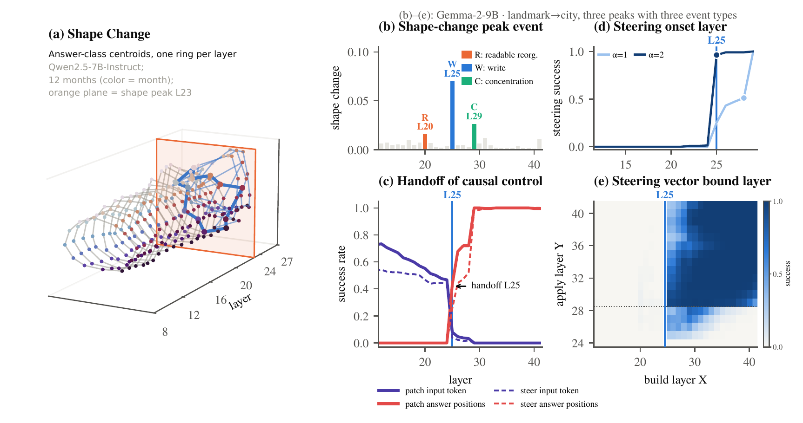
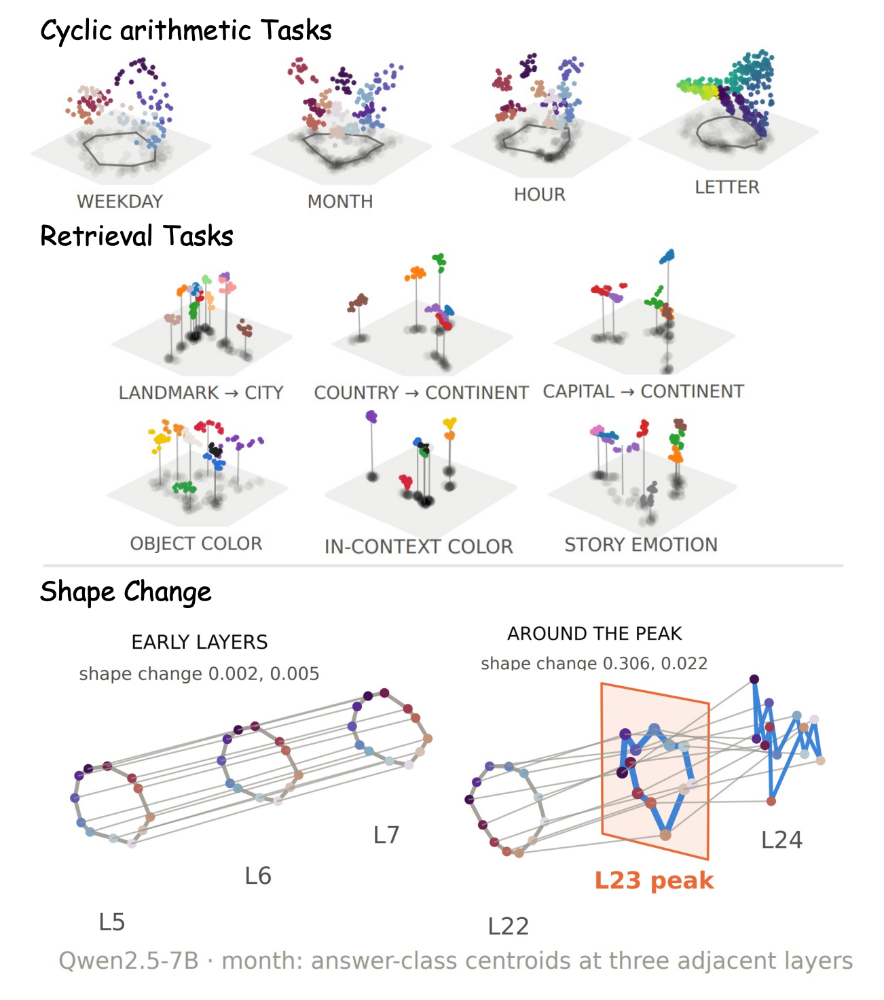
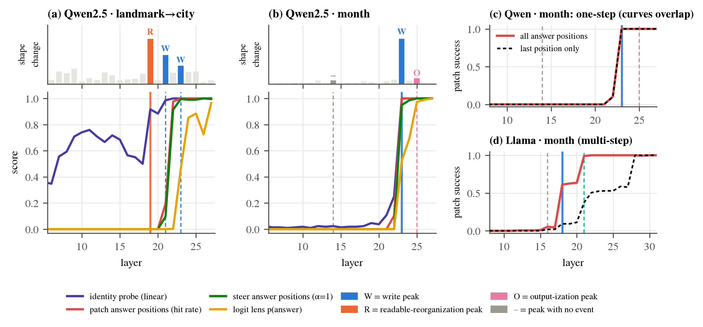
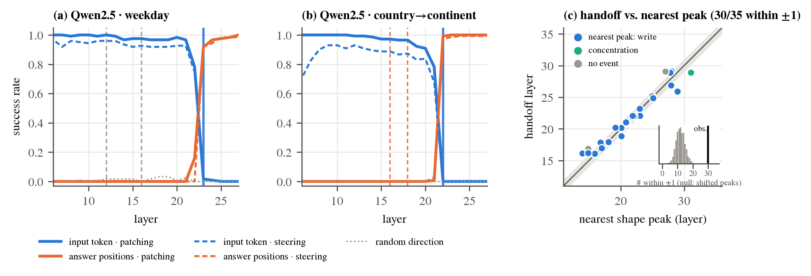
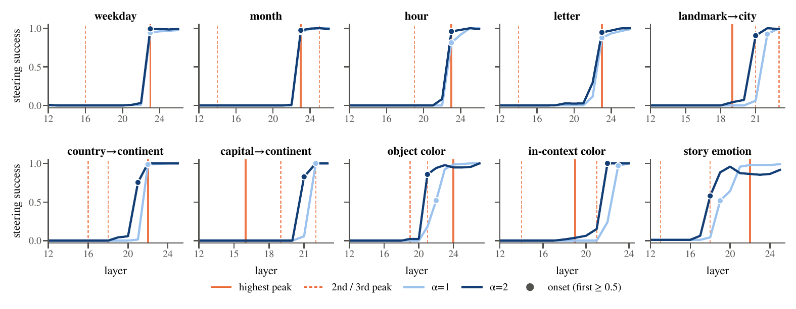
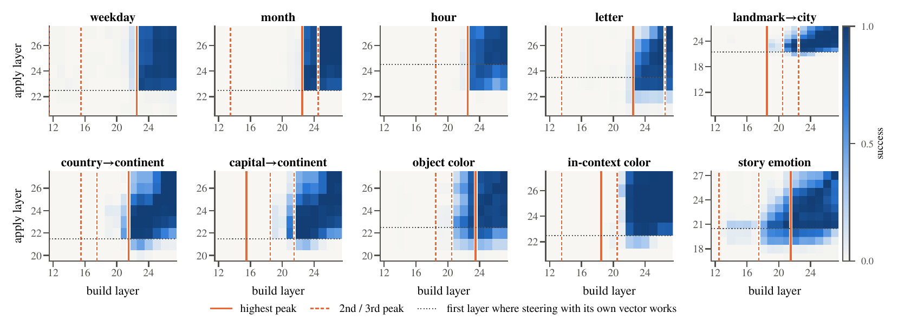
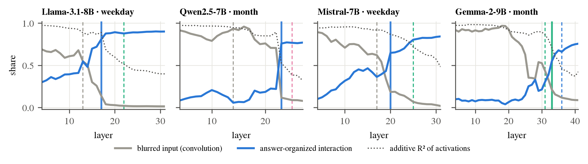

Steering, patching and probing act on a chosen layer, yet the layer at which a model's answer becomes controllable is usually found by sweeping. We introduce a signal that needs only answer labels and locates that layer without any intervention.
Within a task, we group the residual stream by the correct answer and measure how the shape of the answer-class centroids changes between adjacent layers. Across six instruction-tuned models (7–14B parameters) and ten arithmetic and retrieval tasks, these shapes change little at most layers and sharply at a few, which we call shape-change peaks.
These peaks coincide with representational events such as the writing of the answer, and locate three causal boundaries: the handoff of control from the input token to the answer positions, the onset of steering, and the layer at which steering-vector transfer rises most. For each of these boundaries, 71–83% of model–task pairs fall within one layer of a peak, against about 32% for circularly shifted peaks (p < 0.001). For cyclic arithmetic, a simple model explains why: before the peak, answer-grouped geometry is a blurred image of the inputs.
All instruction-tuned, 7–14B parameters, 59 model–task pairs.
Handoff, steering onset and transfer rise, versus about 32% for shifted peaks.
The signal uses only answer labels: no probe, no unembedding, no patching or steering sweep.

Most tools for reading and controlling language models act at a single layer: activation patching swaps hidden states at chosen layers, activation steering adds a direction to the residual stream, probes and lenses read representations one layer at a time. The layer is usually found by sweeping, which requires an expensive intervention at each layer, or predicted from how well the hidden state already reads out as the answer, which can miss an answer that is in the representation but not yet readable as an output token.
We take a geometric route. For each model and task, let \(h_\ell(x)\) be the residual stream after layer \(\ell\) at the last token of prompt \(x\). For each answer class \(c\) we take the centroid \(\mu^c_\ell\) over prompts whose correct answer is \(c\). Stacking the \(K\) centroids gives a configuration \(C_\ell\); we centre it and scale it to unit Frobenius norm, giving \(\tilde C_\ell\). The shape change between adjacent layers is the Procrustes disparity
where \(\|\cdot\|_*\) is the nuclear norm. Translation, rotation, reflection and scale are removed by construction, so \(\Delta_\ell\) is what remains: the change in the shape of the answer configuration from one layer to the next. It requires only answer labels and at least three answer classes.
We take the three highest peaks of \(\Delta_\ell\) in the late layers (from 25% of depth on) and call the largest the highest peak.
Six instruction-tuned models: Qwen2.5-7B-Instruct, Llama-3.1-8B-Instruct, Mistral-7B-Instruct-v0.3, Gemma-2-9B-it, Qwen2.5-14B-Instruct and Phi-4 (14B). Ten tasks in two families. Cyclic arithmetic asks for a start item plus an offset over weekdays, months, clock hours and letters (“What day is three days after Monday?”). Retrieval maps a cue to an answer: landmark→city, country→continent, capital→continent, object→color, in-context color, and story→emotion. We analyze the 59 model–task pairs on which the model answers above chance.

To interpret a peak, we track causal signals (patching and steering at the answer positions) and observational signals (a linear identity probe and the logit lens), and name each late layer by the first question answered yes, in a fixed order:
CConcentration: subspace patching starts to change an answer that full patching already controlled.
WWrite: any other causal signal jumps.
RReadable reorganization: the probe decodes the answer while the causal signals stay near zero.
VVocabulary alignment: only the logit lens rises.
–No event otherwise.
The highest peak is a write in 61% of pairs, nearly three times the rate at other late layers (22%), and carries no event in only 8%, against 46%. The largest rise of the probe, of patching and of steering falls within one layer of a peak in 85%, 81% and 83% of pairs; the largest rise of the logit lens does so in only 55%.
| W | R | C | V | – | n | |
|---|---|---|---|---|---|---|
| Highest peak | .61 | .20 | .08 | .02 | .08 | 59 |
| 2nd / 3rd peaks | .35 | .22 | .09 | .07 | .27 | 118 |
| Other late layers | .22 | .15 | .05 | .10 | .46 | 1324 |
Events at shape-change peaks and at the other late layers, over 59 model–task pairs.
A linear probe can decode the correct answer from a hidden state even when the model does not use it, whereas patching and steering register it only once it has a causal effect, and the logit lens only once it is aligned with the output vocabulary. Readable-reorganization peaks fall in this gap: 38 of the 177 top-3 peaks, in 28 of the 36 retrieval pairs, show a decodable correct answer (median probe accuracy 0.91) while patching and steering change at most 5% of prompts and the logit lens assigns a probability below 0.001. A causal effect follows a median of four layers later, and the logit lens six layers later.
In Qwen, the answer reaches all answer positions at once: patching all of them and patching the last position alone take effect at the same layer. In Llama, Mistral and Gemma, and in half of the Phi-4 tasks, the answer is first written at earlier answer positions, including the chat-template tokens, and reaches the last position later (a median lag of 2.5 layers in Llama, 7 in Gemma). Steering vectors in these models need more layers after the highest peak to transfer well.

Before the correct answer becomes causal at the answer positions, it is controlled by the input token that determines it (the start item, or the cue). The handoff layer is the layer at which patching the input token stops working.
The handoff is abrupt. Control moves from the input token to the answer positions within one layer in 46 of 53 pairs: patching the input token falls from near ceiling to near zero as patching the answer positions rises. Steering places the handoff within one layer of patching in 43 of the 51 pairs where it defines one.
The handoff lands on a peak. The handoff layer lies within one layer of one of the three highest peaks in 44 of 53 pairs, and exactly on one in 29, against 16.6 and 5.9 when the peaks are circularly shifted (p < 0.001). The alignment holds in all six models and both task families. The event at the highest peak tells on which side the handoff falls: a write is the handoff itself, a readable reorganization precedes it, and a concentration follows it.

From which layer does steering the answer positions work, and does a stronger push move that layer earlier? We steer with the centroid difference \(v_Y\) between target and original answer classes at layer \(Y\), scaled by \(\alpha \in \{1,2,4,8\}\). The onset is the first layer at which at least half of the prompts switch to the target answer.
A staircase of onsets. At \(\alpha = 1\), the onset lies no more than one layer before the highest peak in 56 of 59 pairs, and no more than one layer before the earliest of the three highest peaks in all 59. Stronger steering moves the onset earlier, along the peaks: at every \(\alpha\), 71–81% of onsets lie within one layer of a peak, against 32% for shifted peaks. Even at \(\alpha = 8\), at most 6 of 59 onsets fall more than one layer before the earliest peak. Steering the answer positions starts to work where causal control leaves the input token.
Versus logit-lens accessibility. As point predictors, shape peaks and the first layer with logit-lens accuracy above 0.1 are comparable (mean absolute errors of about 2–2.5 layers). As lower bounds they differ: the onset precedes the highest peak by more than one layer in 3 of 59 pairs, but precedes the logit-lens predictor in 17 (p = 0.001). In 23 of 59 pairs, steering already works where the logit lens still reads nothing: the class structure is in place but not yet aligned with the output vocabulary, which the shape signal registers and the logit lens does not.

A centroid-difference vector is often built at one layer and reused at others. For every pair of layers \((X, Y)\) we rescale \(v_X\) to the norm of \(v_Y\) and apply it at layer \(Y\). The transfer of \(X\) is its mean success over the layers where steering with the layer's own vector works.
Vectors built before the peak do not transfer. Vectors built in the five layers before the highest peak reach a mean transfer of 0.08 (median 0.01); vectors built at or after it reach 0.75, in all six models and both task families. The boundary is not where the answer appears: it is linearly decodable 7.6 layers before transfer rises, and pre-peak layers with reliable class structure still transfer at only 0.20.
Transfer rises at peaks. Its largest one-layer increase falls exactly on one of the three highest peaks in 39 of 58 pairs, and within one layer in 48 (83%). These steps fall on write or concentration peaks, and only once on a readable reorganization. At a fixed layer distance, transfer decreases with the cumulative shape change between \(X\) and \(Y\) in 54 of 58 pairs (median Spearman ρ = −0.50).
Practical rule. Build steering vectors after the highest peak; the last layer is the most robust choice (mean transfer 0.91). The peak is a conservative boundary: vectors built before it rarely transfer.

Take \(N\) items, a start item \(s\) and an offset \(k\), with answer \(D = s + k \bmod N\). Before the answer is computed, suppose the state at the answer position is additive in the inputs, \(h = \mu + a(s) + b(k) + \varepsilon\). Prompts that share the answer \(D\) have different start items, so the centroid of class \(D\) averages their start-item features:
the circular convolution of the start-item geometry with the offset distribution. Grouping by answer before the answer exists yields a blurred image of the input, and a centroid difference moves the representation of the inputs rather than of the answer. Once the answer is computed, an answer-organized component \(u(D)\) enters; when it dominates, centroid differences point along the answer, and steering and transfer work. The switch changes the shape of the answer configuration, so the model predicts a peak where \(u(D)\) takes over.
Evidence. Fitting \(h = \mu + a(s) + b(k) + u(D) + \varepsilon\) at every layer of the 23 cyclic-arithmetic pairs: in the five layers before the highest peak, the blurred input term carries a median of 98% of the centroid energy and \(u(D)\) explains only 0.4% of variance beyond the inputs; after the peak, the answer term carries 83% and explains 21%. The layer where it takes over lies within one layer of a peak in 21 of 23 pairs.

| § | Target layer (one per pair) | n | On a peak | Within ±1 | Null | p | Mean dist. | Gemma | Llama | Mistral | Qwen-7B | Qwen-14B | Phi-4 |
|---|---|---|---|---|---|---|---|---|---|---|---|---|---|
| 02 | Largest rise of the probe | 41 | 66% | 85% | 32% | <0.001 | 0.76 | 86% | 100% | 83% | 78% | 100% | 71% |
| 02 | Largest rise of patching | 59 | 54% | 81% | 32% | <0.001 | 0.90 | 70% | 70% | 100% | 90% | 70% | 90% |
| 02 | Largest rise of steering | 59 | 49% | 83% | 32% | <0.001 | 0.90 | 90% | 80% | 89% | 90% | 70% | 80% |
| Largest rise of the logit lens (p(answer)), for contrast | 58 | 33% | 55% | 31% | <0.001 | 2.41 | 20% | 60% | 75% | 70% | 30% | 80% | |
| 03 | Handoff | 53 | 55% | 83% | 31% | <0.001 | 0.81 | 67% | 89% | 88% | 100% | 78% | 78% |
| 04 | Steering onset, α = 1 | 59 | 39% | 81% | 32% | <0.001 | 1.07 | 80% | 70% | 100% | 90% | 70% | 80% |
| 04 | Steering onset, α = 8 | 59 | 36% | 71% | 31% | <0.001 | 1.25 | 50% | 90% | 89% | 80% | 30% | 90% |
| 05 | Largest rise of steering-vector transfer | 58 | 67% | 83% | 32% | <0.001 | 0.91 | 78% | 80% | 100% | 100% | 70% | 70% |
For each model–task pair we take one target layer and compare it with the nearest of the three highest shape-change peaks. On a peak and Within ±1: fraction of pairs at distance 0 and at most 1. Null: fraction within ±1 when the peaks of each pair are circularly shifted within the late layers; p: share of 10,000 shifts that reach the observed fraction. Mean dist.: mean distance to the nearest peak, in layers. Per-model columns give the within-±1 fraction (dark green ≥ 90%, light green 70–89%, red < 70%). Rises count only if they exceed 0.1 in one layer (0.15 for the probe), which leaves 41 pairs for the probe.
We study six instruction-tuned models of 7–14B parameters on ten closed-answer tasks; larger and base models and open-ended generation remain to be tested. A peak locates where the answer geometry reorganizes; telling which event occurs there requires an intervention. Shape-change peaks give boundaries and lower bounds; for a point estimate of where vectors start to transfer, the first layer with logit-lens accuracy above 0.1 is closer on average. The blurred-input model is derived and tested for cyclic arithmetic only.
@article{chen2026shape,
title = {Where the Answer Takes Shape: Shape-Change Peaks Mark Computational Boundaries in {LLMs}},
author = {Chen, Zheng and An, Jiayu and Jiang, Futian and Jain, Nitin and Li, Bo},
year = {2026},
url = {https://github.com/bellafc/shape_peak}
}
Experiment code and released data are at github.com/bellafc/shape_peak. Every script reads and writes under one data folder; the README lists which script produces which table and figure.